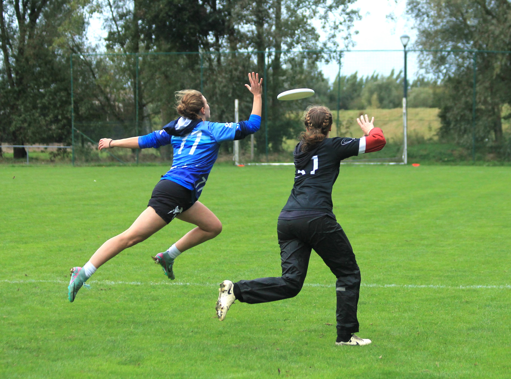
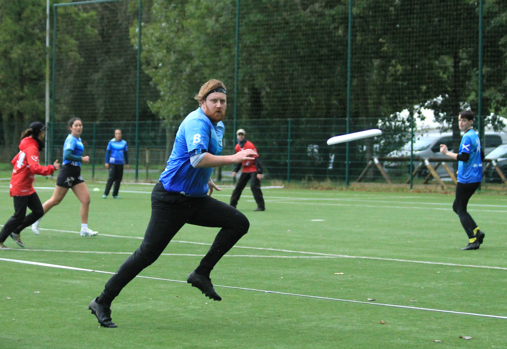

Endurance Training
Endurance in sport refers to the ability of your body to sustain movement for an extended period of time. Building up our endurance allows us to train harder and longer and really pays off in the latter stages of games and tournaments.

Endurance training can refer to muscular endurance and cardiovascular endurance. Lifting weights in the gym can develop our muscular endurance - the ability of muscles to continue to perform repeated contractions against resistance.
The focus of this page is largely cardiovascular endurance - the capacity for our heart and lungs to transport oxygen to our muscles.
Before moving on to specifics, it’s worth highlighting we’re not just training our bodies here, we’re also training our minds.
Endurance training allows us to see what our bodies are actually capable of and to keep stretching that a little each time. We learn how to feel where our limits actually are and when we have more we can give.
Each time we squeeze out an extra 10% in training and don’t die, we have that in the memory bank to tell ourselves to keep going on the pitch.
Developing endurance for ultimate
In order to prepare our bodies for the demands of competitive ultimate, we want our training sessions to mimic our efforts during games.
In a game we’ll walk, jog, run, sprint, stop, change direction, sprint again, jog, jump, dive etc. We have periods on the pitch of intense movement, sometimes sustained, sometimes explosive, followed by periods of rest and recovery on the sideline.

Going for super long and slow runs can be helpful for developing a base level of endurance but doesn’t prepare our muscles, lungs and heart in the same way. Similarly, whilst rowing, cycling and swimming are great for developing fitness and endurance, they’re not recruiting the muscles we use in running, at least not in the same way.
We’ll benefit the most from running as it trains endurance in the specific muscles and ranges of motion of our running strides. It also prepares our joints for impact and all the small muscles and tendons used to control our movement.
Using workouts which incorporate periods of rest teaches your body to recover quickly before the next effort. This is essential to ultimate - using those few minutes on the sideline to get your heart rate back down and being ready to give 100% next time you take the field.
Resources
Glasgow Ultimate has a 16 week track program that begins with interval sessions to build endurance and progresses towards sprinting and linear speed exercises.
Glasgow Ultimate track sessions
Aim for two running sessions a week. Your second session could repeat the weekly workout or may be a different running activity:
Longer runs to build base endurance
- Find your local Parkrun
Sprints or SAQ training
Sports sessions with lots of cardio (ultimate, football, squash etc.)
If you are new to running, ease yourself into it. You could try doing a few week 0 sessions before starting for real or build up the length of your runs with something like couch to 5k.
If you do a lot of running, you will probably want to balance out your interval sessions with other types of running workouts.
Track your progress
Try using apps such as Strava to keep track of your progress - this will help you stay motivated as you see improvement in your distance and/or pace. Remember running performance can be more susceptible to variation due to running surface, weather, environment, etc. Try to run the same route every time you want to benchmark your performance.
Glasgow Ultimate has a Strava group which you can join and follow other people’s activity: https://strava.app.link/oy27VM7tRPb
How hard should it be?
Interval training is designed to build fatigue resistance and increase capacity for high intensity running.
You should be aiming to complete each of your running intervals at a similar pace. There should be a noticeable change of pace between your running and recovery intervals.
Push yourself to run fast at a pace you can maintain. Use whatever mental tricks work best for you. Some people like to push hard on the second interval to get themselves into the workout. Some like to go all in on the penultimate running interval, knowing that the finish line will see them through the final rep.
Treadmill vs outdoors
Both come with pros and cons.
Outdoors is ideal as we play outdoors.
PRO: We train our minds and bodies to run effectively in various conditions that we will end up playing in throughout an outdoor season. Relies on you to keep yourself going - big gains in mental resilience. Outside! Fresh air!
CON: Driving rain. Black ice. Uneven road surfaces. Darkness. Dogs, people, cars. Less control over pacing.
Treadmills are a good alternative if running outside isn’t a sensible option that day or if not using a treadmill means you won’t run at all.
PRO: No weather! Can easily control and monitor your pacing. Consistent surface. Controlled environment for injuries.
CON: Possibly just staring at a wall the whole run. Less reliance on ourselves to keep going, the machine demands it, so slightly less gained in terms of mental resilience.
Non-running alternatives
If you are carrying injuries which will be aggravated by running, please do proceed with caution.
It is great to train our bodies to cope with the stress put on it by running, as this is an unavoidable and integral part of our sport. But we need to manage our injuries responsibly.
Prioritise rehabbing your body to get back to running as soon as possible. In the meantime, find an exercise which gets your heart rate up for a sustained period of time without aggravating your injury or causing pain.
Create a workout which replicates the on/off pace patterns of our running workouts. Try:
Swimtervals
Biketervals / Spin classes
Rowintervals
Elliptervals
